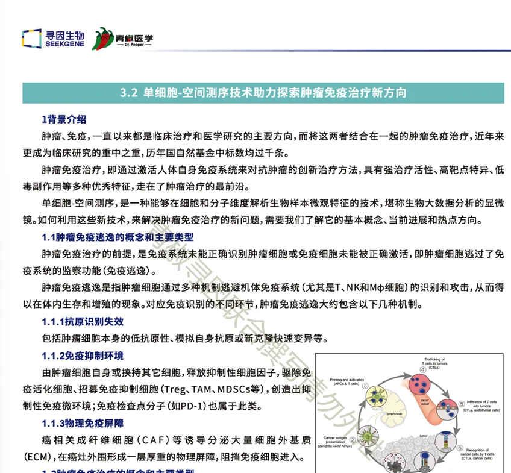
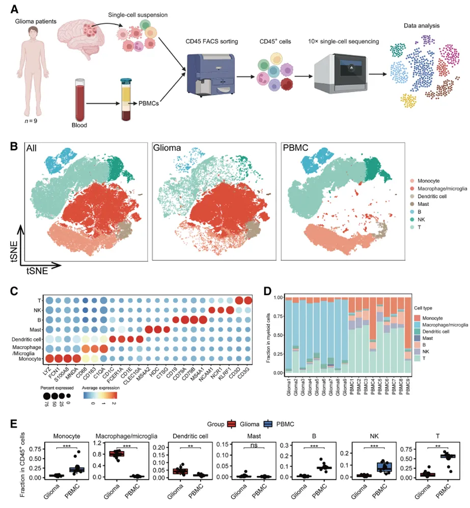
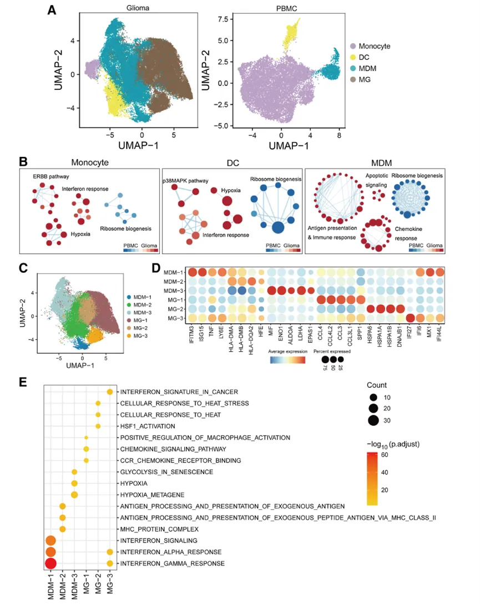
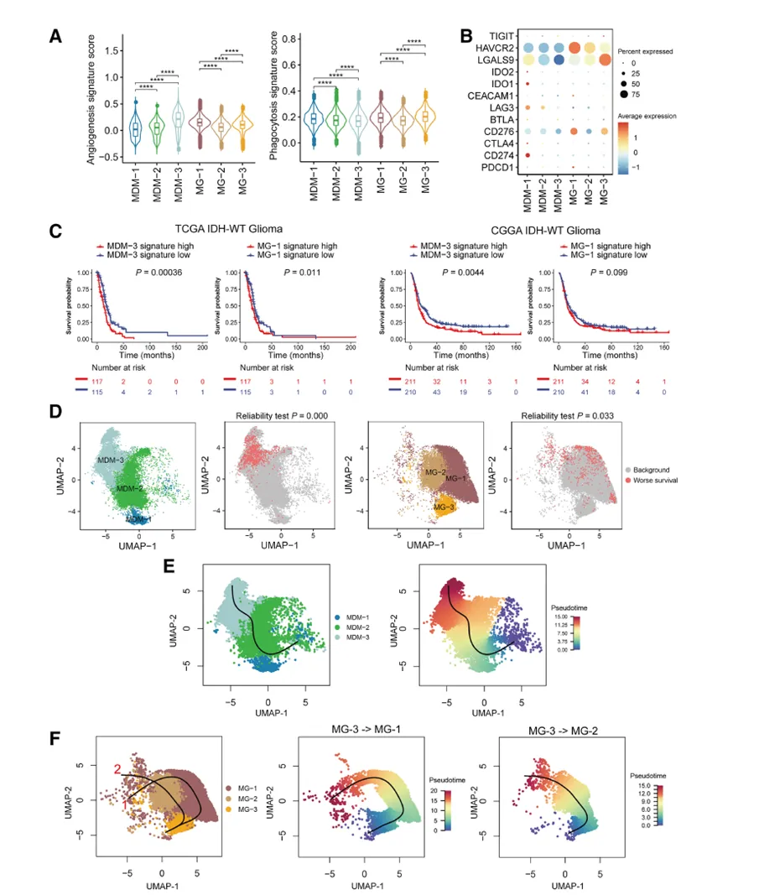
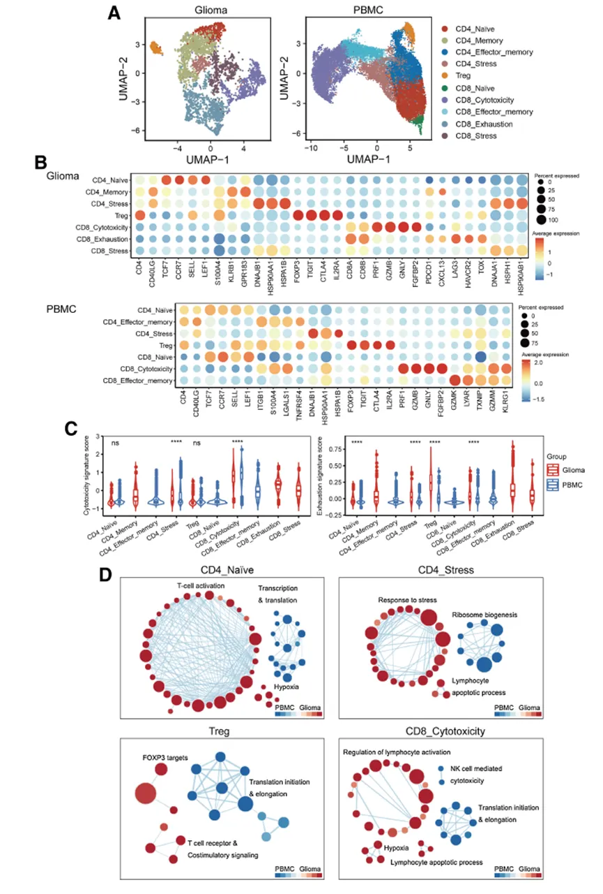
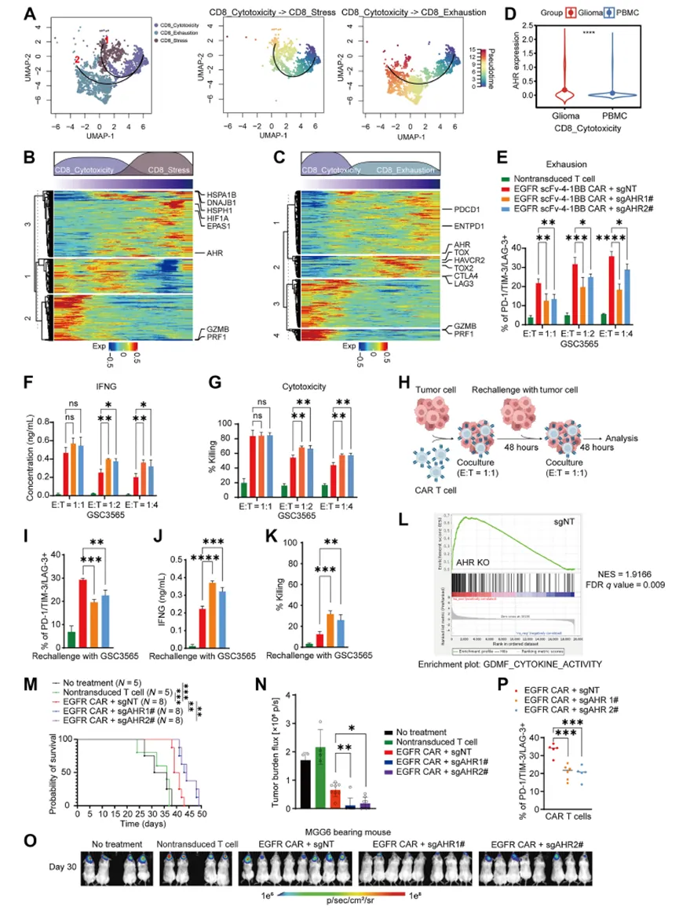
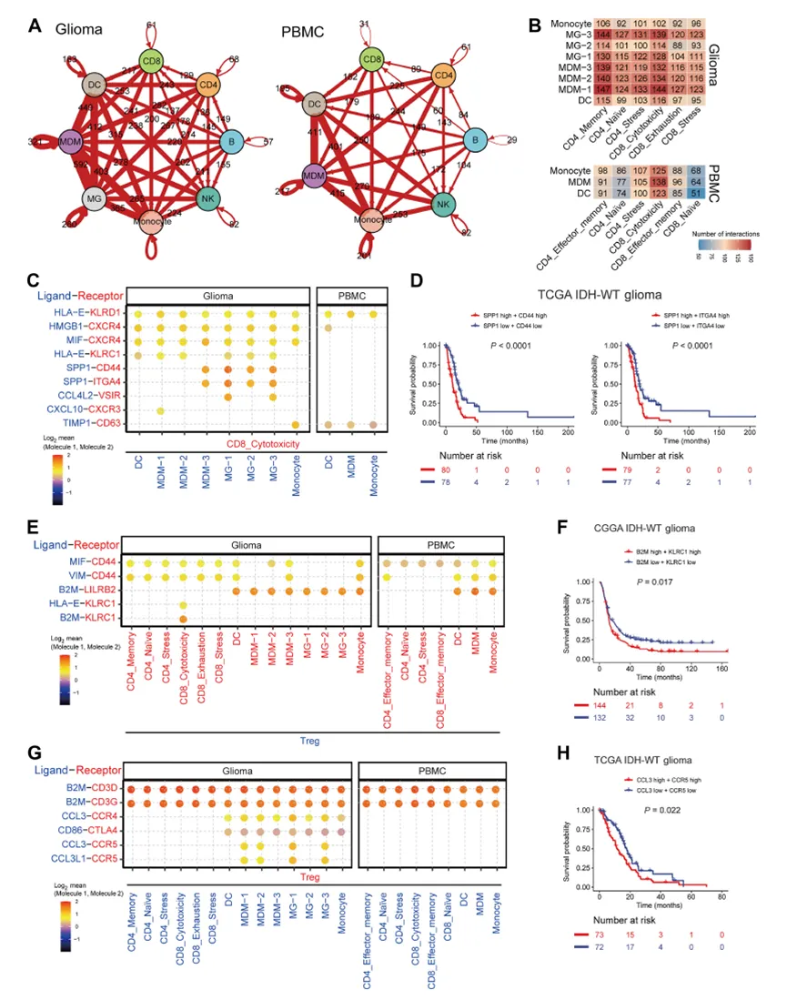

2025年国自然还能写肿瘤免疫微环境吗？
原文：https://mp.weixin.qq.com/s?__biz=MzAwMzIzOTk5OQ==&mid=2247523066&idx=1&sn=d615912806fe4a52494fe2eaa4425bdb&chksm=9b3ce3aaac4b6abc716c31cd571dfa342fe34a1349b70edd160827f6434315417e116c4f5f48#rd 合集：文献速递
一、背景介绍
肿瘤、免疫,一直以来都是临床治疗和医学研究的主要方向,而将这两者结合在一起的肿瘤免疫治疗 ,近年来更成为临床研究的重中之重,历年国自然基金中标数均过千条 。所以说，2025国自然选这个赛道准没错。肿瘤免疫治疗,即通过激活人体自身免疫系统来对抗肿瘤的创新治疗方法 ,具有强治疗活性、高靶点特异、低毒副作用等多种优秀特征，走在了肿瘤治疗的最前沿。单细胞-空间测序,是一种能够在细胞和分子维度解析生物样本微观特征的技术,堪称生物大数据分析的显微镜。如何利用这些新技术,来解决肿瘤免疫治疗的新问题,需要我们了解它的基本概念、当前进展和热点方向。本次话题摘自此前介绍的国自然宝典3.2 单细胞-空间测序技术助力探索肿瘤免疫治疗新方向。 需要国自然宝典纸质版的同学可添加：

我是小寻

二、论文简介
胶质母细胞瘤（GBM）是一种最常见和最具有侵袭性的脑瘤，其在分子诊断上可分为IDH野生型 和IDH突变型 , IDH突变即为为异柠檬酸脱氢酶突变，其中IDH野生型胶质母细胞瘤（IDH-WT-GBM）属于高级别胶质瘤，患者预后极差。在IDH-WT-GBM的肿瘤免疫微环境（TME）中，通常缺少肿瘤浸润淋巴细胞但却存在大量的免疫抑制性髓样细胞 ，被认为是一类免疫冷肿瘤，因此揭示TME中动态的细胞变化和基因表达，有可能为治疗GBM提供新的靶点和策略。随着单细胞技术的飞速发展，已经能实现对复杂的TME进行动态的细胞状态鉴定和基因表达检测，因此在这篇文章(题为:Single-Cell Transcriptomics Reveals the Heterogeneity of the Immune Landscape of IDH–Wild-Type High-Grade Gliomas)中，作者通过单细胞转录组技术进行IDH-WT-GBM中肿瘤组织和外周血（PBMC）免疫细胞异质性分析，并探索了肿瘤细胞和免疫细胞之间的细胞通讯 ，发现了GBM潜在的治疗靶点。原文连接：https://www.ncbi.nlm.nih.gov/pmc/articles/PMC10835213/
三、主要内容
- **1. **单细胞转录组学鉴定IDH-WT-GBM中肿瘤组织和PBMC中的细胞类型
选取9个患者，对其肿瘤组织和PBMC制备单细胞悬液，采用Chromium Controller 和Chromium Single-Cell 3′ Reagent Kits对流式分选后获得的CD45+细胞构建单细胞文库，High Sensitivity NGS Fragment Analysis Kit和 Qubit 1X dsDNA HS Assay Kit 对单细胞文库进行质控，Illumina NovaSeq 6000对文库进行测序，测序结果比对到参考基因组GRCh38上，经Cell Ranger V4.0生成基因表达矩阵（Fig.1A）。TSNE图展示出肿瘤组织和PBMC中所有检测到的免疫细胞（Fig.1B）,作者主要关注了4种骨髓来源 的细胞，包括单核细胞（monocyte），巨噬细胞（macrophage），树突状细胞(DC)和肥大细胞；3种淋巴细胞，包括B细胞，NK细胞和T细胞（Fig.1C-D）。结果发现相比于PBMC，肿瘤组织浸润的免疫细胞 中Macrophage和DC比例较高，而T cell, B cell和NK cell的比例较低（Fig.1E）。
Fig.1

- 2. 单细胞转录组学分析IDH-WT-GBM中肿瘤组织和PBMC的髓样细胞异质性
接下来，作者重点关注了肿瘤组织中浸润较多的巨噬细胞 （MDM）、小胶质细胞(MG)、DC和Monocyte的异质性，UAMP图展示了肿瘤组织和PBMC中的4个细胞亚群比例（Fig.2A）。Seurat工具包中的“AddMoudleScore”函数(一文搞定单细胞基因集评分)进行差异表达基因的功能富集分析，结果发现相比于PBMC中的髓样细胞，肿瘤组织中的Monocyte和 DC细胞中缺氧和干扰素应答信号通路明显上调，核糖体相关通路下调；MDM细胞中凋亡和免疫应答信号通路上调，核糖体相关通路也下调（Fig.2B）。进一步探究发现MDM和MG能够更细致地分为3个亚群 （Fig.2C）,MDM的3个亚群分别高表达干扰素，抗原提呈和缺氧应答相关基因，MG的3个亚群分别高表达趋化因子，应激应答和干扰素相关基因（Fig.2D）。R package cluster Profiler对差异表达的基因进行富集分析，作者发现MDM-3和MG-1簇与炎症通路 相关，MDM-3簇富集到缺氧 相关通路，而MG-1高表达的趋化因子 相关基因控制巨噬细胞迁移（Fig.2E）。
Fig.2

3. 肿瘤相关巨噬细胞（tumor-associated macrophages, TAM）的基因特征和变化轨迹****
为探究TAM细胞簇在肿瘤发生发展中究竟发挥了什么作用，作者评估了血管生成和吞噬作用的基因表达，发现MDM-3和MG-1中表现出较强的血管生成特征，而MDM-1和MG-3中表现出较高的吞噬作用特征（Fig.3A）。此外，作者检测两种细胞各个亚簇免疫检查点 的表达（Fig.3B），发现不同的亚群对于不同的免疫检查点基因的表达不同。结合TCGA 和CGGA临床数据，通过GSVA 中的“gsva”函数(单细胞中应该如何做GSVA？)计算每个患者每个亚型的特征评分，survminer和survival进行生存分析，发现MDM-3或 MG-1高表达患者的总生存率低于低表达患者（Fig.3C-D）。然后，作者将带有聚类信息的 Seurat 对象转换为 SingleCellLaboratory 对象，使用“Slingshot”函数来推断细胞谱系 和进行拟时分析（《拟时序分析》3.monocle2实操），发现MDM 的轨迹始于 MDM-1细胞，后通过MDM-2细胞转化为 MDM-3细胞，而MG细胞的轨迹从MG-3开始，后分化为 MG-1和 MG-2（Fig.3E-F）。
Fig.3

4. 肿瘤组织和PBMC中T细胞多样性****
先前分析已经表明肿瘤组织和PBMC中T细胞的数目不同， 因此作者对T细胞进行从头聚类分析来进探究其多样性，胶质瘤肿瘤组织和PBMC的T细胞分别聚类出7个亚群（Fig.4A）。两者共有4个亚群，各自特有3个亚群（Fig.4B）。为了进一步探究T细胞的功能，通过Seurat的“AddMoudleScore”函数计算不同T细胞亚群的功能分数，包括细胞毒性 和耗竭 等，发现CD8细胞毒性亚群的细胞毒性明显高于任何其他亚群，与以往研究一致，与PBMC相比，肿瘤组织中 CD8细胞毒性亚群的毒性较低，推测其可能与胶质瘤 TME 的免疫抑制 作用有关，同时肿瘤组织中T细胞亚群的耗竭均高于PBMC（Fig.4C）。最后，对于两者共有的4个亚群进行差异基因的富集分析，发现肿瘤组织的T细胞亚群翻译相关通路下调，凋亡通路下调（Fig.4D）。
Fig.4

5. 肿瘤组织和PBMC中T细胞的发育****
进一步使用“Slingshot”函数对T细胞进行拟时序分析，发现肿瘤组织的T细胞从CD8毒性T细胞逐渐转化为CD8耗竭T细胞和CD8应激T细胞（Fig.5A）,伴随着细胞毒性基因的下调和耗竭基因或应激基因的上调（Fig.5B-C）；AHR 是一种配体激活的转录因子（SCENIC单细胞转录因子预测学习手册），AHR激活可导致CD8T 细胞中抑制性受体的上调和细胞因子表达下调，分析发现，相比于PBMC，胶质瘤中 CD8细胞毒性亚群中AHR 的表达显著增加（Fig.5D），以上原因很有可能就是胶质瘤中TME免疫抑制的罪魁祸首。为了进一步探究AHR与T细胞肿瘤杀伤能力之间的关系，作者使用CRISPR-cas9技术通过转染SgAHR构建AHR敲除的EGFR CAR-T细胞，体外与表达EGFR的胶质瘤GSC3565细胞进行共培养，结果显示相比于敲除前，AHR缺失的T细胞耗竭变少，且具有更明显的IFN-γ分泌能力和肿瘤杀伤作用（Fig.5E-K）。RNA-seq测序结果显示，AHR缺失后细胞因子分泌 相关基因明显上调（Fig.5L）。接下来，作者评估了胶质瘤小鼠中AHR缺失与否的CAR-T细胞抑制肿瘤的能力，结果显示AHR-KO CAR T细胞组小鼠T细胞耗竭减少且抑制肿瘤生长作用更明显，生存率更高（Fig.5M-P）。作者在体内体外均进行了实验，严谨地告诉我们AHR可能是优化 CAR-T 细胞治疗胶质瘤患者的潜在靶点。
Fig.5

6. 胶质瘤肿瘤微环境中细胞间存在相互作用****
肿瘤中微环境中细胞之间会不会存在通讯呢，作者进一步进行了探究，使用CellPhoneDB软件分析 L（配体）-R（受体）相互作用，发现相比于PBMC,胶质瘤TME中的细胞存在更多的相互作用（Fig.6A-B）。同时，作者更深一步地检测了CD8毒性T细胞间的细胞通讯，发现胶质瘤TME 中一些已知的负调节因子 如配体骨桥蛋白(SPP1)及其受体 CD44和整合素亚单位 α4(ITGA4)介导的髓样细胞与 CD8毒性T细胞存在强相互作用（Fig.6C），TCGA 和CGGA数据库中SPP1和 CD44或 ITGA4 高表达的患者预后更差（Fig.6D）。Treg作为免疫调节细胞在肿瘤逃逸 中发挥非常重要的作用，作者发现主要组织相容性复合体I 类和HLA-E，β2-微球蛋白(B2M)和受体杀伤细胞凝集素样受体 C1(KLRC1)介导的Treg亚群与CD8毒性T细胞间存在强相互作用，而这些亚群均是T细胞的负调节因子（Fig.6E）,B2M和KLRC1高表达的患者临床预后 也更差（Fig.6F）。此外，作者还发现配体 C-C 基序趋化因子配体3(CCL3)和受体 C-C 基序趋化因子受体5(CCR5)相关的 Treg-MDM与小胶质细胞之间存在特异性相互作用（Fig.6G）,而CCL3和 CCR5的高表达也与较差的总生存率相关（Fig.6H）。以上结果告诉我们，抑制细胞间通讯也有可能是潜在的胶质瘤治疗靶点。
Fig.6

四、总结讨论
综上所述**，** 作者描绘了IDH野生型高级别胶质瘤浸润的免疫细胞和PBMC的免疫景观异质性，为胶质瘤的免疫治疗策略提供了新的线索。全文阅读下来，我们不仅明白了肿瘤组织微环境免疫抑制的原因，也知道了如何去靶向地促进CAR-T细胞 对于胶质瘤的杀伤作用。单细胞测序的飞速发展为探究单个免疫细胞鉴定和基因表达提供了有力的工具，也为找到新的治疗靶点提供了可能性，当与已有的治疗策略相结合后很可能获得更好的疗效。
需要国自然宝典纸质版的同学可添加：
我是小寻

如何联系我们

 公众号后台消息回复不便，这里给大家留一下领取资料及免费服务器(足够支持你完成硕博生涯的生信环境)的微信号 ，方便各位随时交流、提建议（别问在么，添加时直接说来意）。此外呼声一直很高的交流群 也建好了，欢迎大家入群讨论：
公众号后台消息回复不便，这里给大家留一下领取资料及免费服务器(足够支持你完成硕博生涯的生信环境)的微信号 ，方便各位随时交流、提建议（别问在么，添加时直接说来意）。此外呼声一直很高的交流群 也建好了，欢迎大家入群讨论：
大家可以阅读完这几篇之后添加给生信入门初学者的小贴士 如何搜索公众号过往发布内容

 您点的每个赞和在看，我都认真当成了喜欢
您点的每个赞和在看，我都认真当成了喜欢